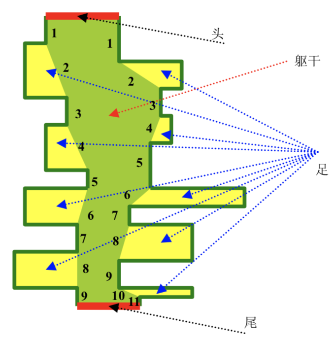
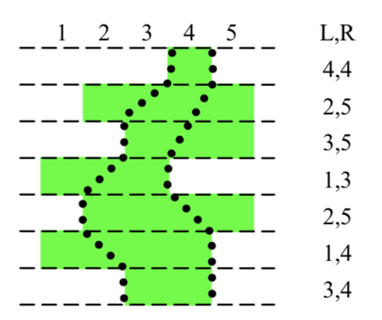
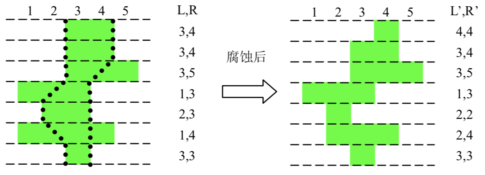

千年虫是远古时代的生物，时隔几千万年，千年虫早已从地球上销声匿迹，人们对其知之甚少。考古生物学家最近开始对其有了兴趣，因为一批珍贵的千年虫化石被发现，这些化石保留了千年虫近乎完整的形态。
理论科学家们根据这些化石归纳出了千年虫的一般形态特征模型，并且据此判定出千年虫就是蜈蚣的祖先！但科学家J发现了实际与理论的一些出入，他仔细的研究了上百个千年虫化石，发现其中大部分千年虫的形态都不完全符合理论模型，这到底是什么因素造成的呢？理论科学家K敏锐的指出，千年虫的形态保存在化石中很有可能发生各种变化，即便最细微的变化也能导致它不符合模型。
于是，摆在科学家面前的新问题诞生了：判断一个化石中的千年虫与理论模型的差距有多大？具体来说，就是根据一个千年虫化石的形态A，找到一个符合理论模型的形态B，使得B是最有可能在形成化石时变成形态A。
理论学家提出的“千年虫形态特征模型”如下（如图所示）：躯体由头、尾、躯干、足四大部分构成。

- 头，尾用一对平行线段表示。称平行于头、尾的方向为x方向；垂直于x的方向为y方向；
- 在头尾之间有两条互不相交的折线段相连，他们与头、尾两条线段一起围成的区域称为躯干，两条折线段都满足以下条件：拐角均为钝角或者平角，且包含奇数条线段，从上往下数的奇数条垂直于x方向。
- 每条折线段从上往下数的第偶数条线段的躯干的另一侧长出一条足，即一个上、下底平行于x方向的梯形或矩形，且其中远离躯干一侧的边垂直于x方向。
注意：足不能退化成三角形(即底边的长度均大于零)，躯干两侧足的数目可以不一样。(如上图，左边有4条足，右边有5条足)
可见，x-y直角坐标系内，躯干和所有足组成的实心区域的边界均平行或垂直于坐标轴。为了方便，我们假设所有这些边界的长度均为正整数。因此可以认为每个千年虫的躯体都由一些单位方格拼成。每个单位方格都由坐标($x,y$)唯一确定。设头尾之间的距离为$n$，则我们可以用$2×n$个整数来描述一条千年虫B（如图）：将B沿平行$x$轴方向剖分成$n$条宽度为$1$的横条，每个横条最左边一格的$x$坐标设为$L_i$，最右一格的$x$坐标设为$R_i$。则$(n,L_1,L_2,..,L_n,R_1,R_2,..R_n)$就确定了一条千年虫。

由于岁月的侵蚀，在实际发现的化石中，千年虫的形状并不满足上面理论模型的规则，一些格子中的躯体已经被某些矿物质溶解腐蚀了。
地质、物理、生物学家共同研究得出：
- 腐蚀是以格子为单位的，只能一整格被腐蚀;
- 腐蚀是分步进行的，每一步只有一格被腐蚀;
- 如果去掉一个格子后躯体不连通了，那么这个格子当前不会被腐蚀;
- 如果一个格子的左边邻格和右边邻格都还没被腐蚀，那么这个格子当前不会被腐蚀;
- 与头相邻的格子不能全部被腐蚀，与尾相邻的格子不能全部被腐蚀;
倘若满足上面五条，我们仍然可以用$(n,L'_1,L'_2,..,L'_n,R'_1,R'_2,...,R'_n)$来描述一个化石里头的千年虫的形态。其中$L'_i≤R'_i$。
例如下图：

现在你的任务是，输入一个化石里的千年虫的描述A<n,L’,R’>，找一个满足理论模型的千年虫的描述B<n,L,R>，使得B可以通过腐蚀过程得以变为A，且由B转化为A的代价（须被腐蚀的格子数）最少。输出此最小代价。
 Comet OJ
Comet OJ